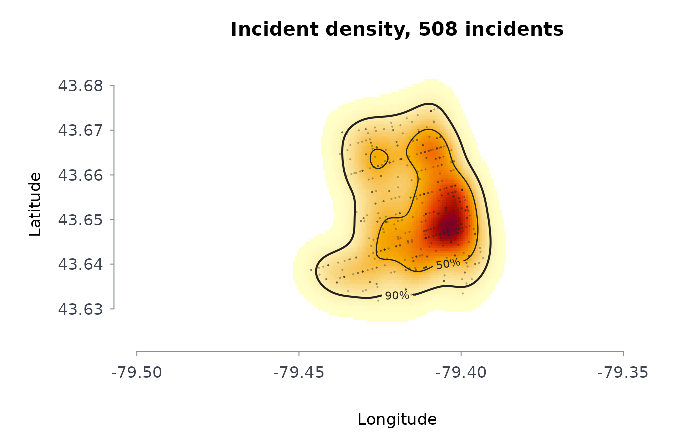

Estimates the density of incident locations – police-reported occurrences, calls for service, addresses of people in a program – as a smooth surface in incidents per square kilometre, and the smallest areas holding a given share of them (the highest-density regions). The plot draws the surface as a heat map with those regions outlined.
Arguments
- lon, lat
Coordinates of the incidents: longitude and latitude in degrees (WGS84) by default, or planar coordinates in metres with
coords = "planar". Points with a missing coordinate are dropped with a message; in degrees, points at exactly (0, 0), which is how several open-data portals publish an incident with no location, are dropped too.- w
Optional non-negative weight per incident. Default 1.
- bw
Kernel standard deviation in kilometres: one value for both directions or two (east-west, north-south). Default: Scott's normal-reference rule, \(\sigma n^{-1/6}\) for each direction.
- ngrid
Grid nodes per direction. Default 200.
- cover
Shares of the incidents whose highest-density regions are reported and outlined. Default
c(0.5, 0.9).- xy
"lonlat"(the default) or"planar".
Value
A list of class rmbl_density: field (incidents per
square kilometre on the grid), x and y (grid coordinates
in kilometres from the centre), lon and lat (the same
grid in degrees, for "lonlat"), bandwidth, n,
dropped, points (the projected incidents), and
regions: one row per coverage share with the density
level that bounds it, its areakm2, and its share of the
mapped area.
Details
The estimate is the Gaussian product-kernel density, computed on the grid by linear binning followed by an exact discrete convolution, which agrees with the direct sum to within the binning error (of order the squared grid spacing over the squared bandwidth). The grid extends three bandwidths past the outermost incident so the surface integrates to the total weight.
A highest-density region for share \(p\) is the set of grid cells with the largest densities whose estimated incidents add up to \(p\) of the total. Its area is the spatial counterpart of a concentration index: when half the incidents fall in a few per cent of the mapped area, they are concentrated. The bandwidth decides how sharp the surface is, so it should be reported with any map; the default suits a first look, not a definitive one.
Errors: lon and lat of different lengths, or (with
coords = "lonlat") a coordinate that is not a longitude and
latitude in degrees; fewer than two located incidents with positive weight;
ngrid not a whole number from 10 to 2000; cover not
shares strictly between 0 and 1; incidents all on one line with no
bw given; a bw that is not one or two positive
numbers, or longer than half the earth's circumference. Incidents with a
missing coordinate are dropped.
References
Scott, D. W. (2015). Multivariate Density Estimation: Theory, Practice, and Visualization, 2nd ed. Wiley, Hoboken, NJ.
Wand, M. P. (1994). Fast computation of multivariate kernel estimators. Journal of Computational and Graphical Statistics, 3(4), 433-445.
Hyndman, R. J. (1996). Computing and graphing highest density regions. The American Statistician, 50(2), 120-126.
Chainey, S., Tompson, L. and Uhlig, S. (2008). The utility of hotspot mapping for predicting spatial patterns of crime. Security Journal, 21(1-2), 4-28.
Examples
b <- read.csv(system.file("extdata", "tps_break_enter_d14_2024.csv",
package = "rmoriebricklayer"))
kd <- crmdens(b$lon, b$lat, ngrid = 120)
kd
#> ╭── Kernel density of incidents ───────────────────────────────────────╮
#> │ Incidents 508 │
#> │ Coordinates longitude and latitude, centred on -79.4114, 43.6508 │
#> │ Grid 120 x 120 cells │
#> │ Bandwidth 0.337 km east-west, 0.412 km north-south │
#> │ Peak density 77.9 incidents per km2 │
#> │ │
#> │ The smallest areas holding each share of incidents │
#> │ incidents areakm2 shrofmaparea densatedge │
#> │ --------- ------- ------------ ---------- │
#> │ 50% 5.51 11.9% 31.91 │
#> │ 90% 14.84 32.0% 11.26 │
#> │ │
#> │ 508 incidents; bandwidth 0.337 km east-west, 0.412 km north-south │
#> │ 50% of the incidents lie in 11.9% of the mapped area. │
#> ╰──────────────────────────────────────────────────────────────────────╯
plot(kd)

# a fixed 300 m bandwidth on a coarser grid: a sharper surface
kd3 <- crmdens(b$lon, b$lat, bw = 0.3, ngrid = 60)
kd3$regions
#> coverage level areakm2 areashr
#> 1 0.5 33.66915 5.149953 0.1247222
#> 2 0.9 13.09560 13.763795 0.3333333
# planar coordinates in metres
set.seed(2)
xy <- cbind(rnorm(200, sd = 500), rnorm(200, sd = 500))
crmdens(xy[, 1], xy[, 2], xy = "planar", ngrid = 40)$bandwidth
#> [1] 0.2220670 0.2038706
# longitudes and latitudes are checked
try(crmdens(c(-79.4, 200), c(43.7, 43.8)))
#> Error : coordinate 2 is not a longitude and latitude in degrees (200, 43.8); planar data take coords = "planar"